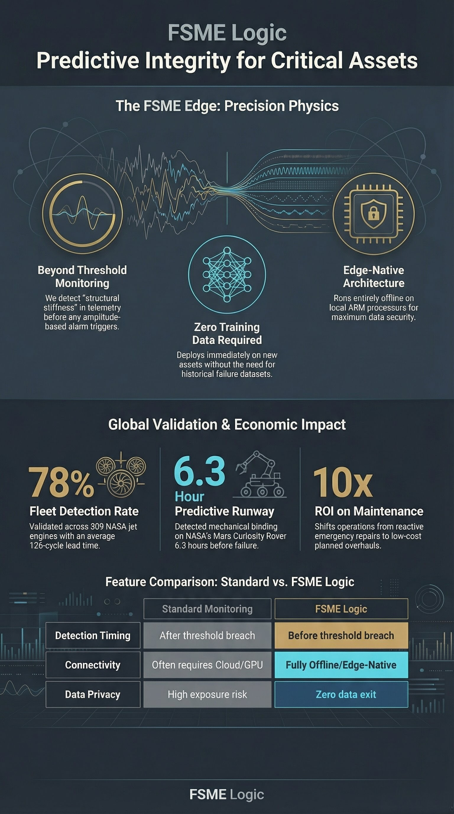

Predictive Integrity Engine — Edmonton, Alberta
No infrastructure required · Same-day results · Data never leaves your facility
The Problem
Threshold alarms fire when a value exceeds a preset limit. By the time the alarm sounds, the damage is already in progress. The warning window has already closed.
Standard sensors tell you when something has already gone wrong. They trigger on amplitude spikes — the symptom, not the cause. Maintenance teams respond to emergencies instead of planning ahead.
A system can show perfectly normal readings right up until failure. Internal structural degradation is invisible to threshold monitoring — no spikes, no alerts, perfectly healthy on every dashboard — until it isn't.
Most AI-based predictive platforms require your operational telemetry to be uploaded for processing. Your data leaves your facility. For industrial and fleet operations, that's an unacceptable security exposure.
What FSME Logic Does
Physical systems accumulate stress over time. That stress leaves a measurable trace in the signal record. FSME Logic reads that trace — identifying structural degradation weeks or months before any threshold alarm would trigger.
We detect the earliest signs of structural stress accumulation in your signal record — long before any visible symptom appears.
All analysis runs on local, air-gapped hardware in our Edmonton facility. Your data is never uploaded to any cloud server or transmitted over any network. SHA-256 custody receipt included.
Most AI maintenance platforms need months of failure data before they can operate. FSME Logic deploys cold — on any new asset, from the first day of operation.
No new sensors. No new hardware. No infrastructure changes. We work directly from your existing SCADA, BMS, or data logger CSV exports.
Validated across aerospace telemetry, commercial vehicle fleets, industrial bearings, refrigeration systems, and orbital satellite hardware.
Every audit delivers a clear, actionable summary — which systems showed early warning indicators, what the stress timeline looks like, and what action is recommended. Written for operations managers, not physicists.
Precision Physics
Standard monitoring waits for something to go wrong. FSME Logic detects the structural signatures that precede failure — identifying the point where a system's signal record begins deviating from its own history.
The result is a planning window measured in hours, days, or months — not seconds. Time to schedule maintenance, order parts, and prevent unplanned downtime entirely.
See Validation Data ▸
Independent Validation
Produced on offline edge hardware. No cloud compute. No GPU clusters. No training phase. Every result confirmed against official ground-truth labels after detection.
Detected a four-channel spacecraft subsystem cascade 9 months before the first officially recorded ESA ground truth anomaly.
Detected mechanical actuator binding on the Curiosity Rover 382 steps before NASA's official failure label.
Successfully identified degradation across 509 commercial turbofan engines with an average 126-cycle warning advantage.
Want to see the full NASA, ESA, CWRU, and refrigeration results?
View all validation data →Interactive Signal Demo
Select your equipment type and operating hours. The visualization simulates the signal signature FSME Logic reads — showing the early stress pattern that appears long before any threshold alarm would trigger. Based on real benchmark degradation profiles.
Simulation note: Signal patterns are based on real degradation profiles from published benchmark datasets (CWRU Bearing, NASA C-MAPSS, LIGO O3b, and proprietary refrigeration measurements). Displayed waveforms are illustrative simulations, not live sensor output. Actual detection lead times vary by equipment type and data quality.
The Process
Pull a CSV from your existing monitoring system. 30–90 days of sensor readings is ideal. No special format required — SCADA, BMS, or data logger output all work.
Transfer your data file to us securely. All analysis runs on our local, offline hardware in Edmonton — no internet connection, no cloud uploads. We do not store your data.
A comprehensive summary identifying which systems showed early warning indicators, what the stress timeline looks like, and what action is recommended.
A SHA-256 cryptographic chain of custody document confirming your data was handled securely and never transmitted at any stage.
Book a Pilot Integrity Audit. Fully offline, no new infrastructure required. Results delivered the same day.
Behind-the-scenes engineering, validation walkthroughs, and the story of building FSME Logic from consumer hardware in Edmonton.